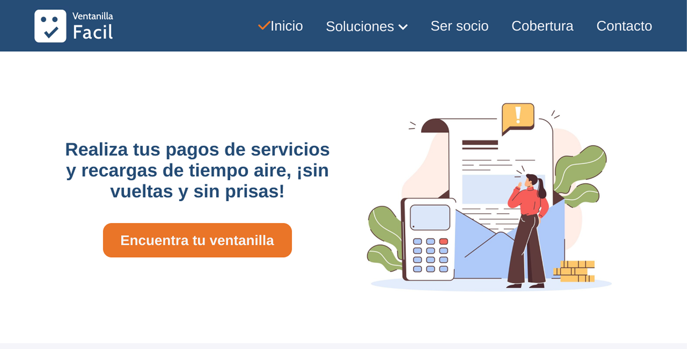
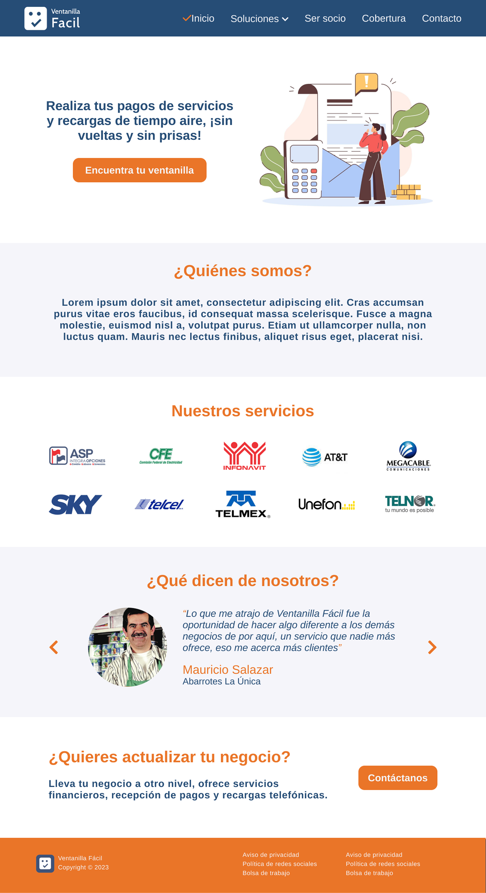

Mejorando la experiencia de usuario rediseñando lo obsoleto
Ventanilla Fácil es una red de corresponsales financieros subsidiaria de la sofipo ASP Integra Opciones. Con el objetivo de modernizar su presencia digital y optimizar la experiencia de usuario, me encargué del rediseño de su sitio web. El proyecto se centró en mejorar la usabilidad, claridad y atractivo visual del sitio, respetando las pautas del manual de identidad corporativa de la empresa.
El problema
El sitio web anterior presentaba desafíos en términos de navegación, estructura de contenido y diseño visual. Los usuarios reportaban dificultades para encontrar información clave y percibían el sitio como anticuado, lo que afectaba la percepción de confiabilidad y profesionalismo de la marca.
La estrategia
El principal objetivo del proyecto fue modernizar la interfaz del sitio para alinearla con las tendencias actuales de diseño, mejorando tanto la estética como la funcionalidad para brindar una experiencia más intuitiva y agradable. Además, se buscó optimizar la arquitectura de la información para facilitar la navegación y asegurar la consistencia visual, respetando las pautas establecidas en el manual de identidad corporativa. Esto incluyó la adaptación del sitio para dispositivos móviles y de escritorio, garantizando una experiencia de usuario fluida en todos los tamaños de pantalla.


El proceso
El proceso comenzó con una investigación exhaustiva para analizar el sitio web existente, revisando tanto el manual de identidad corporativa como estudios de usabilidad para identificar los puntos de fricción que limitaban la experiencia del usuario. Con esta información, se definieron los requisitos del proyecto, priorizando las necesidades del negocio y las expectativas de los usuarios.
Se simplificó la arquitectura de la información, permitiendo una navegación más intuitiva y rápida. El diseño final incorporó patrones modernos que transmiten confianza y profesionalismo, aplicando principios de diseño limpio y minimalista, en línea con las mejores prácticas del sector financiero.
Resultados y aprendizaje
El nuevo diseño logró mejorar significativamente la percepción de la marca, facilitó la navegación del sitio y reforzó la identidad corporativa de Ventanilla Fácil. Esto se tradujo en una experiencia de usuario más fluida y profesional, alineada con los objetivos del proyecto.
El proyecto de rediseño de Ventanilla Fácil fue una oportunidad para aplicar mis habilidades en diseño de experiencia de usuario, equilibrando creatividad y requisitos corporativos.
Enhancing User Experience by Redesigning the Outdated
Ventanilla Fácil is a network of financial agents and a subsidiary of the financial institution ASP Integra Opciones. To modernize its digital presence and improve the user experience, I led the redesign of their website.
The project focused on enhancing usability, clarity, and visual appeal—while staying aligned with the company's brand guidelines.
The problem
The previous website faced challenges with navigation, content structure, and visual design. Users reported difficulties finding key information and perceived the site as outdated, which affected the brand’s reliability and professionalism.
The strategy
The main goal of the project was to modernize the site’s interface by aligning it with current design trends, improving both aesthetics and functionality to deliver a more intuitive and enjoyable experience. Additionally, the information architecture was optimized to make navigation easier and ensure visual consistency, all while adhering to the brand guidelines.
This included adapting the site for both mobile and desktop devices, guaranteeing a smooth user experience across all screen sizes.
The process
The process began with thorough research to analyze the existing website, reviewing both the brand guidelines and usability studies to identify friction points limiting the user experience. With this information, project requirements were defined, prioritizing business needs and user expectations.
The information architecture was simplified, enabling more intuitive and faster navigation. The final design incorporated modern patterns that convey trust and professionalism, applying clean and minimalist design principles aligned with best practices in the financial sector.
Results & learnings
The new design significantly improved the brand perception, made site navigation easier, and strengthened Ventanilla Fácil’s corporate identity. This resulted in a smoother, more professional user experience aligned with the project’s goals.
The Ventanilla Fácil redesign was a great opportunity to apply my UX design skills, balancing creativity with corporate requirements.